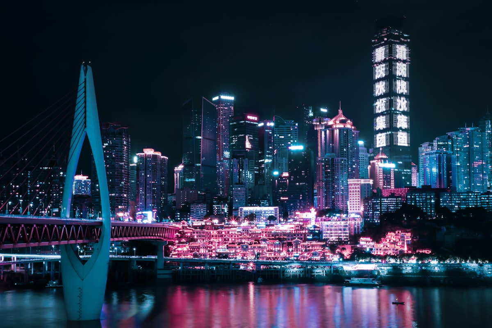
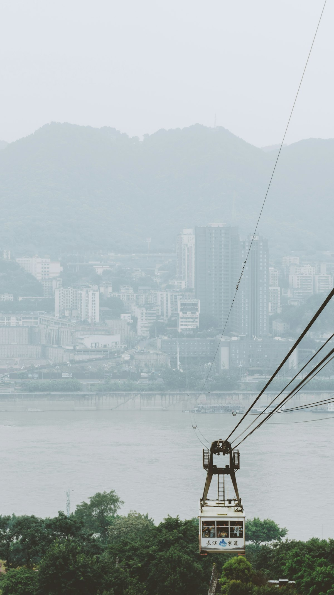
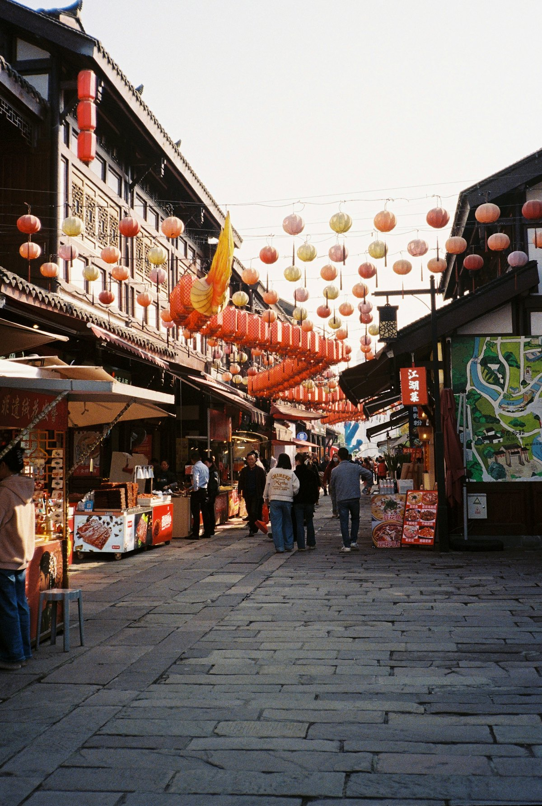
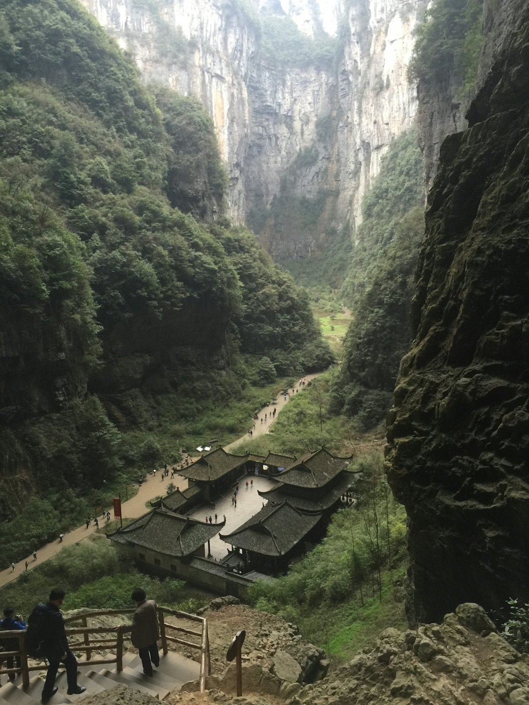
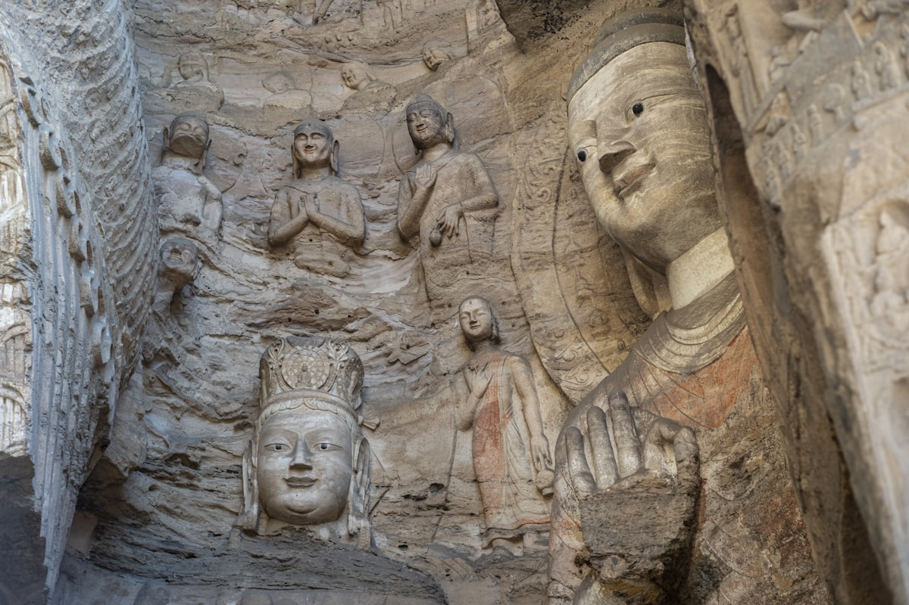
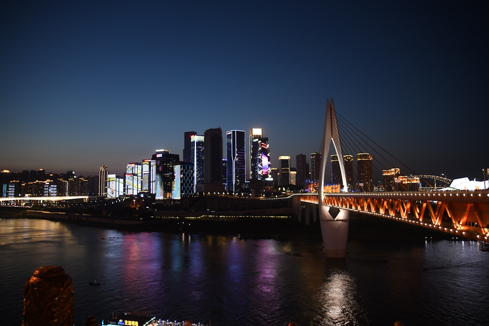
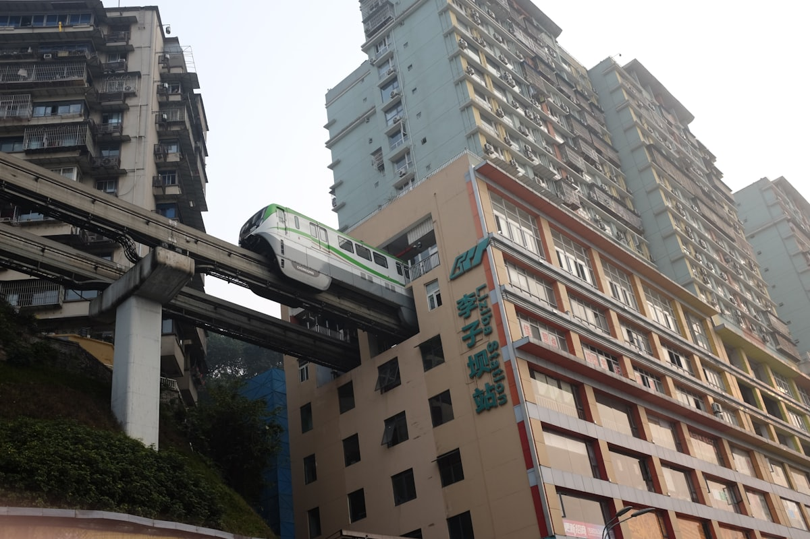

| 事项 | 结论 |
|---|---|
| 事项 | 结论 |
| 推荐方案 | 10 天 9 晚（含武隆、大足 2 个远郊日） |
| 返程约束 | 第 10 天下午/晚间返程 |
| 行程链 | 洪崖洞 → 长江索道 → 磁器口 → 武隆 → 大足 → 市区收尾 |
| 预算（人均） | 经济 3200–4200 ／ 标准 5200–6800 ／ 舒适 8500–11000 |
| 三件提前事 | ① 武隆/大足门票与直通车提前订 ② 洪崖洞夜景避开节假日挤爆时段 ③ 酒店选解放碑/朝天门近轻轨 |
| 季节提醒 | 春、秋季最舒服；夏季火炉湿热但夜景震撼，冬季多雾少晴 |
| 交通卡 | 轨道交通支持手机扫码，单程 2–7 元 |
以下为 10 天 9 晚的推荐节奏。山城台阶多、上坡下坎，每天主景点 ≤2 个，穿舒服的鞋。
| 日期 | 行程 | 过夜地 | 主题 |
|---|---|---|---|
| D1 抵渝 | 入住解放碑，傍晚洪崖洞 + 千厮门大桥夜景 | 解放碑 | 抵达 + 夜景预热 |
| D2 | 解放碑商圈 → 长江索道 → 龙门浩老街 → 南山一棵树 | 南山/解放碑 | 山城经典 |
| D3 | 磁器口古镇 → 渣滓洞/白公馆 → 李子坝轻轨 | 解放碑 | 老街 + 红色人文 |
| D4 | 武隆天生三桥（天坑）→ 仙女山 | 武隆 | 世界自然遗产 |
| D5 | 大足石刻（宝顶山）→ 返回主城 | 解放碑 | 世界文化遗产 |
| D6 | 三峡博物馆 → 人民大礼堂 → 皇冠大扶梯 → 观音桥 | 解放碑 | 城市文化 |
| D7 | 山城步道 → 十八梯 → 湖广会馆 → 来福士/朝天门 | 解放碑 | 老街烟火 |
| D8 | 鹅岭二厂 → 鹅岭公园 → 白象居 → 弹子石老街 | 解放碑 | 文创 + 江景 |
| D9 | 重庆动物园或北温泉（二选一）→ 南滨路夜景 | 解放碑 | 休闲放松 |
| D10 返程 | 上午采购伴手礼，下午返程 | — | 收尾 |
以下为 10 天全程的逐小时执行时间线，可当作「当天打开照着走」的清单。标注 ※ 的可选项视体力与天气取舍。
| 时间 | 事项 |
|---|---|
| 14:00–17:00 | 抵达重庆（江北机场/重庆北站高铁），乘轨道交通进城入住解放碑 |
| 17:30–18:30 | 办理入住（推荐解放碑/洪崖洞周边，近 1/2 号线） |
| 19:00–21:00 | 洪崖洞（免费）：吊脚楼群 + 千厮门大桥夜景，先桥上拍全景再进楼 |
| 21:00 | 晚餐：八一好吃街或解放碑周边，尝重庆小面/酸辣粉 |
| 时间 | 事项 |
|---|---|
| 08:30–10:30 | 解放碑步行街（免费）：抗战胜利纪功碑 + 商圈，早市尝山城小面 |
| 11:00–12:00 | 长江索道（单程 20 元）：新华路站跨江，俯瞰两江交汇 |
| 12:30–14:00 | 午餐：南岸龙门浩老街，江景餐厅 |
| 14:30–17:30 | 龙门浩老街（免费）：民国老建筑 + 江景，慢逛 |
| 18:00–20:30 | 南山一棵树观景台（30 元）：看渝中半岛夜景，拍大片 |
| 时间 | 事项 |
|---|---|
| 08:30–12:00 | 磁器口古镇（免费）：青石板老街、陈麻花，码头文化 |
| 12:00–13:00 | 磁器口午餐：毛血旺、古镇鸡杂 |
| 13:30–15:30 | 渣滓洞/白公馆（免费需预约）：红色教育基地 |
| 16:00–17:00 | 李子坝轻轨站（免费）：轻轨穿楼打卡，观景台在站外楼下 |
| 18:00 | 晚餐：重庆火锅（解放碑/较场口老店） |
| 时间 | 事项 |
|---|---|
| 07:00 | 出发（主城→武隆约 2.5h，可乘高铁到武隆西再转景交） |
| 09:30–13:00 | 武隆天生三桥（参考价 125 元+景交）：天坑三桥、天龙桥、青龙桥，含电梯下行 |
| 13:00–14:00 | 午餐：武隆农家菜（碗碗羊肉） |
| 14:30–17:30 | 仙女山（参考价 60 元+小火车）：高山草原、林海雪原（冬季） |
| 18:30 | 宿武隆或返回主城 |
| 时间 | 事项 |
|---|---|
| 07:30 | 出发（主城→大足约 1.5–2h，高铁大足南站转车） |
| 09:30–13:00 | 大足石刻·宝顶山（参考价 115 元）：千手观音、圆觉洞，世界文化遗产 |
| 13:00–14:00 | 午餐：大足当地菜 |
| 14:30–16:30 | 北山石刻（参考价 70 元，可选） |
| 17:00 | 返回主城，晚餐 |
| 时间 | 事项 |
|---|---|
| 09:00–12:00 | 重庆中国三峡博物馆（免费需预约）：三峡文物、巴渝历史 |
| 12:00–13:00 | 午餐：周边快餐/小面 |
| 13:30–14:30 | 人民大礼堂（8 元）：标志性红墙穹顶建筑 |
| 15:00–16:00 | 皇冠大扶梯（单程 2 元）：亚洲最长坡地扶梯 |
| 16:30–18:30 | 观音桥步行街：商圈逛街，晚上不夜九街（可选） |
| 时间 | 事项 |
|---|---|
| 09:00–11:00 | 山城第三步道（免费）：依山而建的步道，老巷与江景 |
| 11:30–12:30 | 十八梯（免费）：修复后的老重庆街巷 |
| 13:00–14:00 | 午餐：下半城老店 |
| 14:30–16:00 | 湖广会馆（参考价 25 元）：移民会馆建筑群 |
| 16:30–18:30 | 来福士/朝天门广场：两江交汇，看日落 |
| 19:00 | 晚餐：解放碑，夜间逛八一好吃街 |
| 时间 | 事项 |
|---|---|
| 09:30–11:30 | 鹅岭二厂文创园（免费）：旧印刷厂改造的文创园，电影取景地 |
| 11:30–12:30 | 鹅岭公园（免费）：瞰胜楼登高，远眺两江 |
| 13:00–14:00 | 午餐：大坪/两路口 |
| 14:30–16:00 | 白象居（免费）：老居民楼建筑奇观（24 层无电梯视角） |
| 16:30–18:30 | 弹子石老街（免费）：南滨路江景老街，看朝天门对岸 |
| 19:00 | 晚餐：南滨路江景餐厅 |
| 时间 | 事项 |
|---|---|
| 09:00–12:00 | 重庆动物园（参考价 25 元）看熊猫 或 北温泉泡温泉（二选一） |
| 12:00–13:00 | 午餐 |
| 13:30–17:30 | 自由活动：观音桥/时代天街逛街，或磁器口补拍 |
| 18:30–20:30 | 南滨路夜景：长江两岸灯光秀 |
| 时间 | 事项 |
|---|---|
| 08:30–11:30 | 采购伴手礼：火锅底料、陈麻花、合川桃片 |
| 11:30–12:30 | 午餐 |
| 13:00–16:00 | 退房，赴机场/高铁站返程 |
| 16:30 | 抵达出发地，结束重庆 10 天行程；火锅底料注意托运 |
必去（必去）/ 顺路（顺路）/ 可跳过（可跳过）。

必去
必去
必去
必去
顺路
可跳过图片为 Unsplash 主题图（洪崖洞、索道、磁器口等为重庆实景），用于页面配图。更多免费景点：三峡博物馆、山城步道、鹅岭二厂、白象居。
点击左侧节点可在地图上定位；点击地图 marker 会高亮对应节点。坐标为 WGS-84 转 GCJ-02 纠偏后标注。
以下为单人、不含购物的估算；门票为参考价，以现场为准。交通按高铁/飞机进出重庆计（邻近城市高铁往返约 600–1000 元），不同出发地浮动较大。
| 项目 | 经济（3200–4200） | 标准（5200–6800） | 舒适（8500–11000） |
|---|---|---|---|
| 往返交通 | 高铁约 600–1000 | 高铁/飞机约 1000–1800 | 飞机+接送约 2000–2800 |
| 住宿（9 晚） | 青旅/快捷 700–1100 | 连锁酒店 1600–2400 | 解放碑星级 4000–5500 |
| 门票 | 基础景点约 350 | 含索道+武隆等约 600 | 全含+演出约 900 |
| 餐饮（10 天） | 600–800（小面/火锅） | 1200–1600（火锅+江湖菜） | 2000–2800（江景餐厅/老字号） |
| 市内交通 | 轨道 100–150 | 轨道+打车 250–350 | 打车/包车 500–700 |
带娃推荐：重庆科技馆（免费）、动物园（看熊猫）、欢乐谷，替换部分老街爬坡行程；洪崖洞人多注意牵好孩子。
6–9 月主城湿热，把更多时间分配给武隆仙女山、金佛山等高山避暑地；火锅配冰粉、凉糕更解暑。
| 方式 | 时长 | 参考价 | 备注 |
|---|---|---|---|
| 高铁（推荐） | 视出发地 1–8h | 二等座 100–1000 元 | 重庆北/西/沙坪坝站，枢纽多 |
| 飞机 | 视出发地 1–3h | 300–1800 元 | 江北机场 T3/T2，轨道 10/3 号线进城 |
| 自驾 | 视出发地 | 高速+停车费 | 山城坡多、导航易绕，建议公共交通 |
| 区域 | 价格/晚 | 优点 | 短板 |
|---|---|---|---|
| 解放碑/洪崖洞 | 快捷 300–500 / 星级 700–1500 | 近洪崖洞、索道、1/2 号线 | 游客多，旺季贵 |
| 南坪/南滨路 | 民宿 300–500 | 江景好，看对岸渝中夜景 | 过江靠轨道/打车 |
| 观音桥 | 快捷 250–400 | 商圈成熟，美食多 | 离洪崖洞约 20 分钟 |
| 沙坪坝/大学城 | 快捷 200–350 | 近磁器口，便宜 | 离主城核心远 |